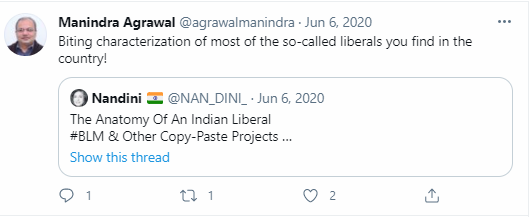

Manindra Agrawal was born May 20th, 1966 in Allahabad in the state of Uttar Pradesh, India.

He did a bachelors and a PHD in computer science, from the Indian Institute of Technology Kanpur. He finished them in 1986.
He was a Humboldt Fellow and joined IIT Kanpur as faculty in 1996. He is a member of The World Academy of Sciences (TWAS), and all academies of science and engineering of India.
Well known for his research report "Primes in a P", He has won both the Fulkerson prize and the Gödel Prize in 2006.
Manindra Agrawal currently works as a university professor for the department of computer science and engineering. He is also a researcher on the Complexity Theory and Computational Number Theory for the Chennai Mathematical Institute.
He is currently quite active on social media. And during covid, he is also very active in researching numbers for covid.
Biting characterization of most of the so-called liberals you find in the country!"
-Manindra Agrawal over twitter, June 6, 2020.